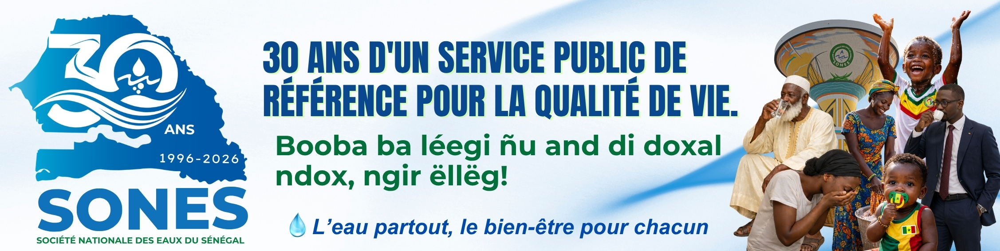
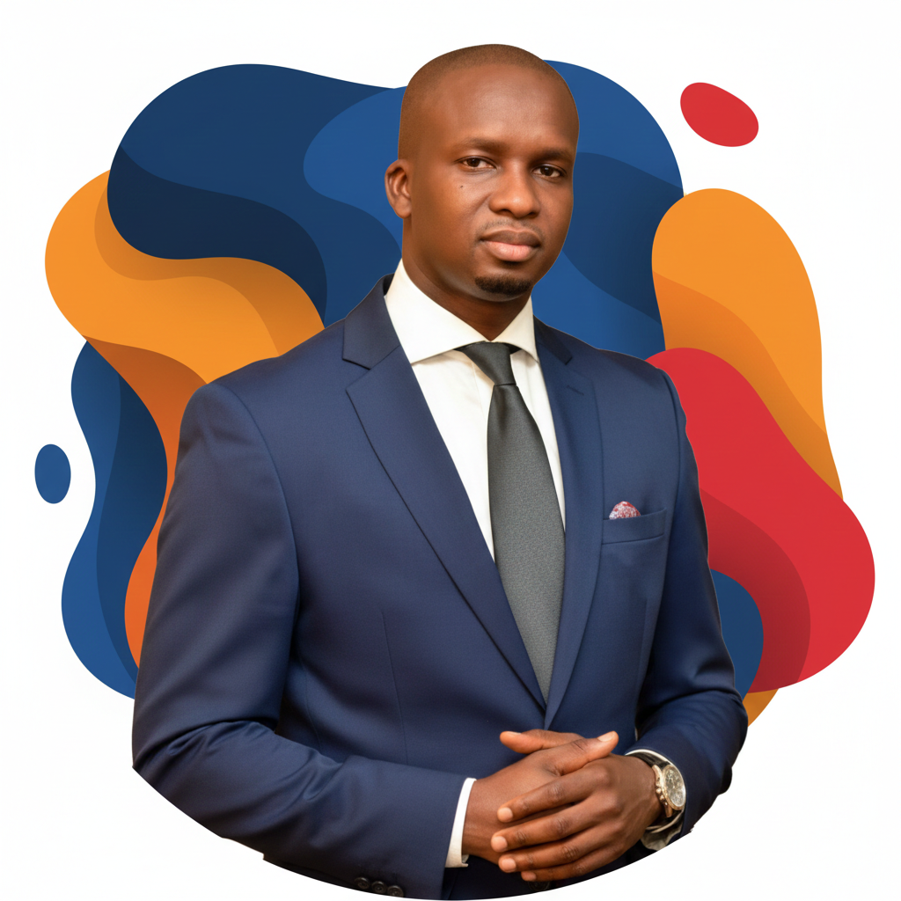
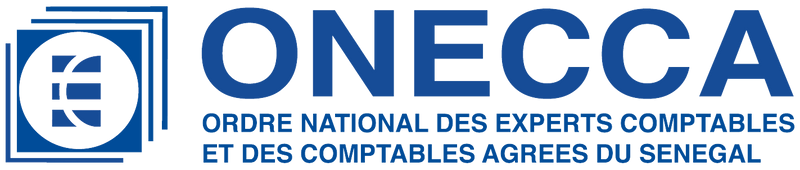
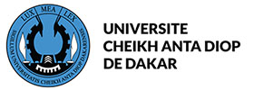
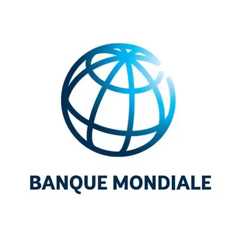
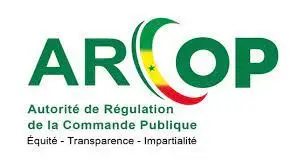
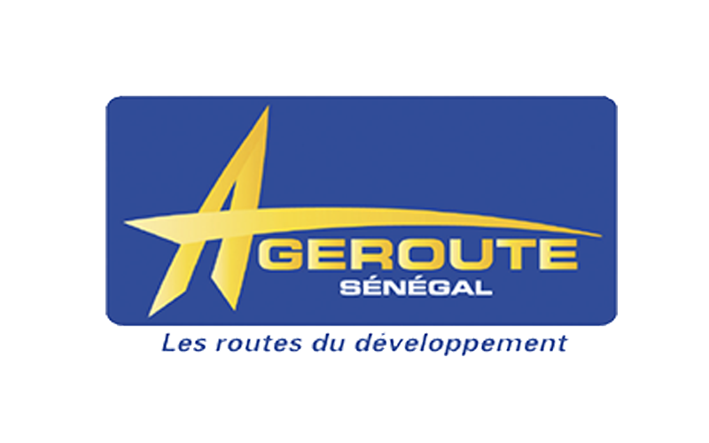
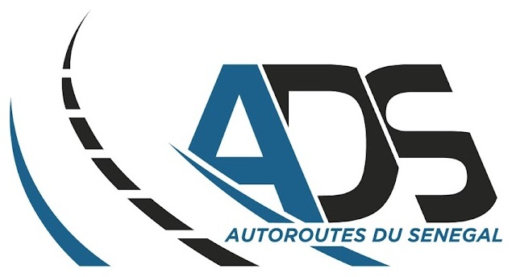
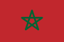

Gestion du patrimoine
Sécurisation du patrimoine foncier et immobilier, suivi technique et administratif des biens.
Proposition de conception, de méthodologie, de plan de travail et d'organisation pour l'élaboration du PSD et du Contrat de Performance de la SONES.

Créée par la loi n°95-10 du 7 avril 1995, la Société Nationale des Eaux du Sénégal est une société nationale du secteur parapublic, dont le capital est souscrit à 99,93% par l'État du Sénégal et à 0,07% par huit communes chefs-lieux de région.
Sécurisation du patrimoine foncier et immobilier, suivi technique et administratif des biens.
Recherche de financements, maîtrise d'ouvrage et d'œuvre des travaux de renouvellement et d'extension.
Qualité de l'eau, du service public et de la performance du fermier au cœur de l'exploitation.
Information et mobilisation des usagers autour de l'accès et de la préservation de l'eau.
En référence à la loi d'orientation n°2022-08 du 19 avril 2022 et au décret n°2025-671, la SONES est tenue d'élaborer un Plan Stratégique de Développement sur 5 ans, associé à un contrat de performance. Le PSD s'alignera sur la Vision Sénégal 2050 et la Lettre de Politique Sectorielle de Développement du Ministère de l'Hydraulique et de l'Assainissement (2025-2029), pour inscrire la SONES dans la trajectoire d'accès universel à l'eau et à l'assainissement.

Expert en planification stratégique · Expert-comptable diplômé (ONECCA)

Économiste et expert international en planification stratégique de développement, gouvernance publique et infrastructures, reconnu pour sa capacité à articuler les dimensions économiques, institutionnelles et organisationnelles dans la conception, la mise en œuvre et l'évaluation des politiques publiques.
Titulaire d'un doctorat en sciences de gestion (États-Unis
)
et d'un doctorat préparé à l'UCAD


Banque mondialeÉvaluation et analyse de politiques publiques en Afrique centrale
ARCOPÉvaluation des infrastructures hydrauliques et des contrats PPP
AGEROUTE SénégalPlan stratégique et évaluation de projets routiers & autoroutiers
Autoroutes du Sénégal (ADS)PSD 2026-2030 & contrat de performance 2026-2028 finalisés
Guinée · MarocÉtudes économiques et d'optimisation de la gouvernanceUne approche méthodologique rigoureuse, un plan de travail et une organisation du personnel efficaces et en harmonie avec les besoins de la mission, articulés autour de trois volets.
Comprendre la SONES, définir les objectifs et l'approche d'exécution.
Un calendrier maîtrisé sur 16 semaines et des livrables planifiés.
Une équipe d'experts complémentaires mobilisés sur la mission.
La phase initiale garantira que le PSD est en parfaite conformité avec les axes de la Vision Sénégal 2050, notamment en matière de gestion durable des ressources, d'équité territoriale et de service public agile.
La méthodologie intègre d'emblée la collecte de données sectorielles pour nourrir le Système d'Information Sectoriel, conformément aux objectifs de digitalisation des services publics prônés par le Plan National de Transformation.
Notre démarche épouse le canevas d'analyse des Plans Stratégiques de Développement du ministère chargé des Finances, en couvrant l'ensemble de ses exigences :
Une démarche qui transforme la mission en un véritable programme de transformation organisationnelle. Cliquez sur une phase pour explorer son contenu.
Cette phase ne se limite pas à une simple réunion de lancement. Elle consiste à construire une compréhension commune des attentes de l'État, de la SONES, de SEN'EAU, des partenaires techniques et financiers et des usagers.
Au-delà du SWOT et du PESTEL, le diagnostic devient un véritable diagnostic multidimensionnel.
Les tableaux de bord permettront de disposer immédiatement des tendances.
Des ateliers d'intelligence collective, à choisir parmi :
Ils permettent de répondre collectivement à des questions telles que : où voulons-nous que soit la SONES dans cinq, dix ans ?
Le PSD sera construit selon une architecture moderne, en cascade :
L'une des innovations majeures : ne pas produire uniquement un document PDF, mais un tableau de bord fortement digitalisé avec des KPI en temps réel.
Mise en œuvre d'une véritable stratégie de conduite du changement.
Création d'un jumeau numérique du Plan stratégique : au lieu d'un document figé, la SONES disposerait d'une plateforme numérique permettant :
Cette méthodologie transforme la mission de simple élaboration d'un document stratégique en un véritable programme de transformation organisationnelle. Elle permet à la SONES de disposer non seulement d'un Plan stratégique de développement, mais également d'un système intégré de pilotage stratégique, fondé sur la donnée, le suivi en temps réel, la gestion des risques, l'intelligence collective et la mesure continue de la performance. Cette approche est pleinement alignée sur les orientations du Sénégal 2050, les attentes des partenaires techniques et financiers et les standards internationaux de gouvernance des entreprises publiques.
Du cadrage jusqu'à la remise des rapports provisoires, la mission se déroulera sur une période prévisionnelle de quatre mois calendaires, soit seize semaines ouvrées.
Rapport de cadrage / plan de mission
Rapport diagnostic (SWOT, PESTEL, VRIO, benchmarking)
Plan stratégique de développement 2026-2030
Contrat de performance validé & cadre de suivi
Pour une meilleure prise en charge de la mission, le Dr GUEYE est appuyé par deux experts aux expertises transversales.
Expert en planification stratégique · Expert-comptable
22 ans d'expérience en planification stratégique, évaluation de politiques publiques et contrats de performance en Afrique.
22 ansIngénieur électromécanique · PMP
Ingénieur (EPT), MBA Gestion de Projet (CESAG), Master Ingénierie Financière. Double expertise technique et financière (électromécanique, hydraulique, gaz, PPP).
17 ansConseiller sénior & Expert-comptable
13 ans au Cabinet ADOC Audit & Conseil, spécialiste du secteur hydraulique : analyse de marché, benchmarking et stratégie commerciale.
13 ans